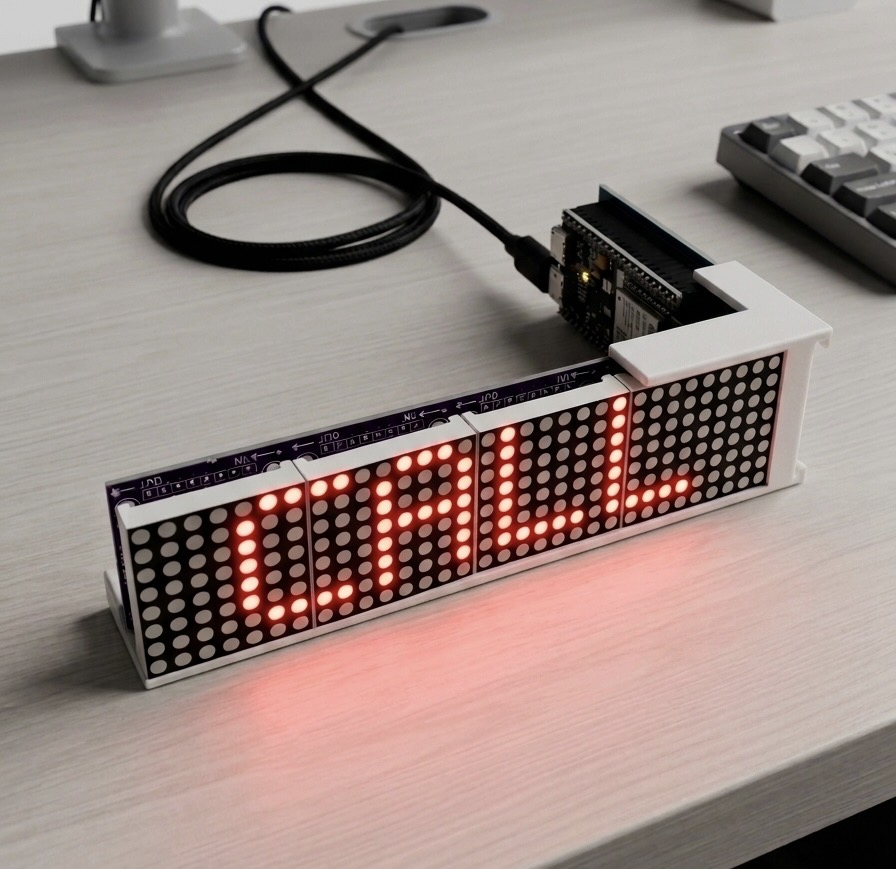
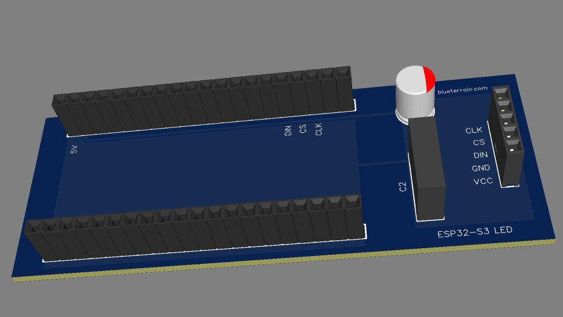

Sign mode
One-tap status text — BUSY, FOCUS, ON AIR — overrides the ambient rotation, with an optional auto-clear timer.
● ON AIR · open hardware
An ambient ticker that rotates live stocks, weather, and the time — then flips to a one-tap status sign on demand. Built on an ESP32-S3 and a 4-in-1 MAX7219 LED matrix. Configured entirely over Bluetooth.

/ what it does
An ambient rotation you set and forget, and an active sign that takes over the moment you need it.
One-tap status text — BUSY, FOCUS, ON AIR — overrides the ambient rotation, with an optional auto-clear timer.
A live MM:SS countdown from 1–99 min, capped with a random animation — fireworks, sonar, sparkle — then back to ambient.
Stock quotes from Finnhub and multi-location weather from Open-Meteo, geocoded on-device. No phone tether required.
Steady H:MM when shown alone, scrolls H:MM AM/PM when mixed in. NTP-synced, timezone-aware.
A native app: multi-device switcher, preset chip grid, and a Display tab with per-category toggles plus a master on/off.
Every write is gated on a 6-digit PIN. iOS uses the native pairing dialog; the PIN rotates on factory reset.
/ under the hood
Single-file firmware, deliberately. Here's what's holding it together.
A fetch task pinned to Core 0 pulls quotes and weather while Core 1 runs a cooperative loop() — no delay(), no jank on the display.
WiFi, API keys, tickers, locations, mode, and the active sign are all set over a documented GATT service. The CLI and the iOS app speak the same protocol.
Bonded links via passkey entry, with a fallback PIN characteristic for non-pairing clients. Five wrong tries buys a lockout.
Config survives power cycles in flash; fetched data and the active sign stay in RAM, so a reboot cleanly resumes the ambient rotation.
/ make your own
Two off-the-shelf modules, a custom PCB, and a 3D-printed bracket. Everything you need is in the repo.
| Part | What | |
|---|---|---|
| MCU board | Freenove ESP32-S3-WROOM (FNK0099) — onboard NeoPixel, native USB-C | Buy ↗ |
| Display | DIYables 4-in-1 MAX7219 8×8 LED matrix | Buy ↗ |
| PCB | Custom board carrying both modules — EasyEDA sources, order via JLCPCB | Files ↗ |
| Bracket | 3D-printed bracket (STL included) | STL ↗ |
| Cable | USB-C for power + flashing | any |
// then flash it
git clone https://github.com/ssayala/esp32-led-simple
cd esp32-led-simple
pio run -t upload // build & flash over USB-CFirst boot scrolls the BLE name and a 6-digit PIN on the matrix. Pair from the iOS app or the Python CLI, set your WiFi, and you're live. Full walkthrough in the Quick start.
